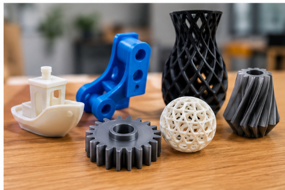

Що таке 3D-технології?
3D-технології — це сукупність методів створення, обробки та відтворення тривимірних об'єктів. Вони використовуються в промисловості, медицині, освіті, архітектурі та дизайні.

3D-моделювання
3D-моделювання дає змогу створювати цифрові моделі предметів, деталей, будівель та інших об'єктів.
3D-друк
3D-друк дає змогу виготовляти фізичні предмети на основі цифрових тривимірних моделей.
3D-сканування
3D-сканування допомагає отримувати цифрові моделі реальних предметів для подальшого використання.